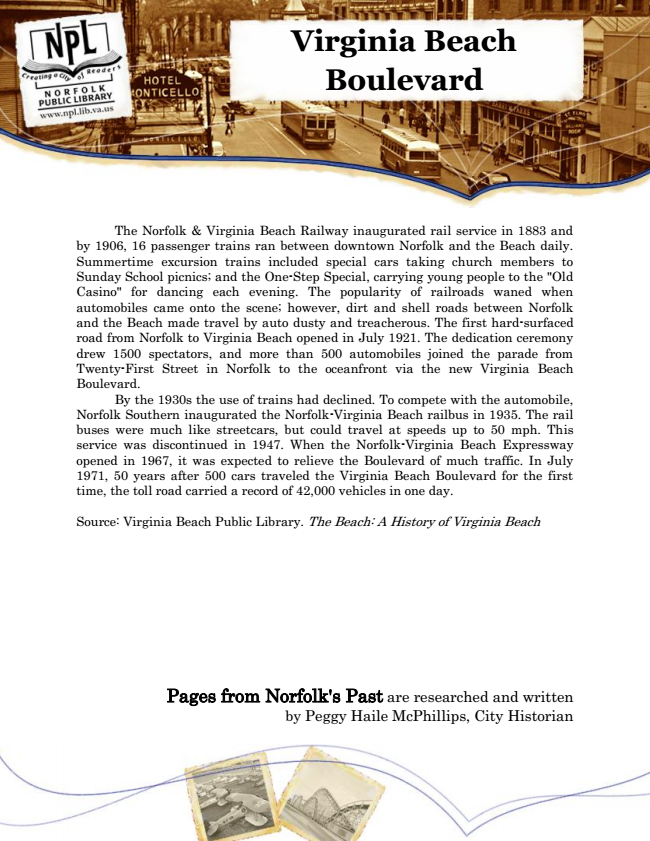

Virginia Beach Boulevard
The Norfolk & Virginia Beach Railway inaugurated rail service in 1883 and by 1906, 16 passenger trains ran between downtown Norfolk and the Beach daily. Summertime excursion trains included special cars taking church members to Sunday School picnics; and the One-Step Special, carrying young people to the "Old Casino" for dancing each evening. The popularity of railroads waned when automobiles came onto the scene; however, dirt and shell roads between Norfolk and the Beach made travel by auto dusty and treacherous. The first hard-surfaced road from Norfolk to Virginia Beach opened in July 1921. The dedication ceremony drew 1500 spectators, and more than 500 automobiles joined the parade from Twenty-First Street in Norfolk to the oceanfront via the new Virginia Beach Boulevard.
By the 1930s the use of trains had declined. To compete with the automobile, Norfolk Southern inaugurated the Norfolk-Virginia Beach railbus in 1935. The rail buses were much like streetcars, but could travel at speeds up to 50 mph. This service was discontinued in 1947. When the Norfolk-Virginia Beach Expressway opened in 1967, it was expected to relieve the Boulevard of much traffic. In July 1971, 50 years after 500 cars traveled the Virginia Beach Boulevard for the first time, the toll road carried a record of 42,000 vehicles in one day.
Source: Virginia Beach Public Library. The Beach: A History of Virginia Beach
Pages from Norfolk's Past are researched and written by Peggy Haile McPhillips, City Historian